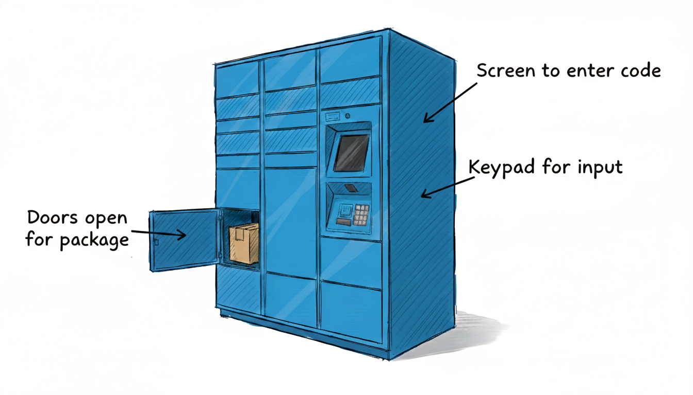

Common Problems
Amazon Locker
Understanding the Problem
📦 What is Amazon Locker?
Amazon Locker is a self-service package pickup system. A delivery driver deposits a package into an available compartment, the system generates an access token, and the customer uses that code to retrieve their package.

Amazon Locker
Requirements
You walk into the interview and get greeted with this prompt:
"Design a locker system like Amazon Locker where delivery drivers can deposit packages and customers can pick them up using a code."
That's a start, but not enough detail for us to begin coding. Before touching a whiteboard, spend 3-5 minutes asking questions to nail down exactly what you're building.
Clarifying Questions
The goal here is to expose edge cases and constraints before they bite you halfway through implementation. In a real project, this is the conversation you'd have with your PM or tech lead before writing a single line of code.
Structure your questions around four areas: what are the core operations, what can go wrong, what's the scope boundary, and what might we need to extend later?
If you haven't used an Amazon locker, say so and ask for a quick primer:
You: "I haven't used an Amazon locker, can you explain how it works?"Interviewer: "It's a self-serve pickup point. When you order, you can choose a locker location. Once the package is deposited, you get a code to open the locker and grab your package."
You: "Are there different sized compartments? Can a small package go into a large compartment if all the small ones are full?"Interviewer: "Yes, we have small, medium, and large compartments. For now, match the size exactly. If there's no compartment of the right size, reject the deposit."
Good. We've learned that size matters and allocation is strict. That's simpler than dealing with fallback logic.
You: "What's in scope for this system? Are we modeling the whole delivery flow, or just the piece from when the driver arrives at the locker until the customer picks up?"Interviewer: "Just the locker operations. Assume the package is already at the locker location. Delivery routing and driver assignment are out of scope."
Perfect. This cuts out a bunch of complexity. We're not designing a logistics system. Just the locker itself.
You: "How does the customer get their code? Do we need to send an SMS or email, or do we just return the code and let some other system handle notification?"Interviewer: "Return the code. How it gets to the customer is someone else's problem."
That's a clean boundary. Our system generates the code. Notification lives downstream.
You: "What happens if someone enters the wrong code multiple times? Should we lock them out for security?"Interviewer: "Interesting question, but let's keep it simple. Just validate the code. If it's wrong, return an error. No lockout logic for now."
We've just scoped out a feature that would add state tracking and time windows. Good to identify it, but we're not building it today.
You: "Can one customer have multiple packages in the system at once? Are access tokens unique per package?"Interviewer: "One access token per package. A customer could have multiple packages, and each would get its own code and be stored in its own compartment."
So access tokens map 1:1 with packages. No shared codes or bulk pickups.
You: "How long do the codes last? What happens to a package if it's never picked up?"Interviewer: "Codes expire after 7 days. If someone tries to use an expired code, we reject it. The package stays in the compartment until staff removes it and returns it to the sender."
Now we know the TTL and what happens when it expires. The code stops working, but staff has to physically remove the package before the compartment becomes available again.
You: "Last one. What if all compartments of a given size are full when a driver tries to deposit?"Interviewer: "Return an error. The driver would need to try a different locker location or come back later."
Straightforward. No queueing, no reservations. Either there is space or there isn't.
Final Requirements
After that back-and-forth, you'd summarize this on the whiteboard:
Final Requirements
Requirements:
1. Carrier deposits a package by specifying size (small, medium, large)
- System assigns an available compartment of matching size
- Opens compartment and returns access token, or error if no space
2. Upon successful deposit, an access token is generated and returned
- One access token per package
3. User retrieves package by entering access token
- System validates code and opens compartment
- Throws specific error if code is invalid or expired
4. Access tokens expire after 7 days
- Expired codes are rejected if used for pickup
- Package remains in compartment until staff removes it
5. Staff can open all expired compartments to manually handle packages
- System opens all compartments with expired tokens
- Staff physically removes packages and returns them to sender
6. Invalid access tokens are rejected with clear error messages
- Wrong code, already used, or expired - user gets specific feedback
Out of scope:
- How the package gets to the locker (delivery logistics)
- How the access token reaches the customer (SMS/email notification)
- Lockout after failed access token attempts
- UI/rendering layer
- Multiple locker stations
- Payment or pricingNotice we called out two tradeoffs explicitly: lockout logic and access token delivery. In an interview, it's smart to mention features you considered and chose not to build. It shows you're thinking ahead without over-engineering. You can always circle back to these in the extensibility section.
Core Entities and Relationships
With clear requirements in hand, the next step is figuring out what objects make up the system. Your instinct should be to look for nouns in the requirements and turn them into classes. But keep in mind that not every noun deserves to be an entity. Some are concepts that belong as fields on other classes or even input parameters.
Let's walk through the candidates and see which ones actually pull their weight.
Package - This one seems obvious at first. We're storing packages, so we need a Package class, right? But stop and think about what a Package would actually do in our system. Packages are external to our locker system, meaning some other system (Amazon's fulfillment system) tracks package IDs, shipping info, customer details, and all that. Our system only cares about one thing, the package's size. We need to know if it's small, medium, or large so we can pick the right compartment. That's it. Package doesn't need to be an entity, the size is just an input parameter to our deposit operation.
Compartment - This is a real thing. A physical container with a size and an ID. Clear entity.
Locker - Someone needs to orchestrate the whole system. When a driver says "I have a medium package," something needs to scan compartments, find an available one, generate a code, and tie it all together. That's the Locker. It's the entry point.
AccessToken - At first, you might think the access token is just a string field on Package or Compartment. But an AccessToken isn't just a code. It's a bearer token with an expiration time. It represents the right to open a specific compartment. That's a concept worth modeling. If AccessToken is its own entity, it can own the expiration logic and the mapping to the compartment.
With these considerations, our final entity set is:
| Entity | Responsibility |
|---|---|
| Locker | The orchestrator. Owns all compartments and the AccessToken lookup map. Handles deposit and pickup operations. |
| AccessToken | Represents a bearer token for compartment access. Holds the code, expiration timestamp, and a reference to the compartment it unlocks. Enforces expiry when validating. |
| Compartment | A physical locker slot. Has an ID, a size, and tracks its own occupancy state (whether a package is physically present). |
You might not nail the entity design on your first try. That's fine. Start with what seems obvious, then refine as you work through the class design. If you notice awkward indirection or classes with no real behavior, come back and adjust. Design is iterative.
Class Design
Now that we've settled on three entities, we need to define their interfaces. What state does each one hold, and what methods does it expose? We'll start with the orchestrator and work our way down. Since Locker is the entry point for the system, we'll design it first, then move on to AccessToken and Compartment.
For each class, we'll trace back to the requirements and ask two questions: what does this entity need to remember (this will be the state of the class), and what operations does it need to support (this will be the public methods of the class)?
Locker
The Locker is the system's public API. External code interacts with it to deposit packages and pick them up, so everything flows through this class.
From the requirements, we can derive the state:
| Requirement | What Locker must track |
|---|---|
| "System assigns an available compartment of matching size" | The collection of all compartments and which ones are occupied |
| "User retrieves package by entering access token" | A map from access token code to AccessToken object for fast lookup |
This gives us:
Locker State
class Locker:
- compartments: Compartment[]
- accessTokenMapping: Map<string, AccessToken>The one thing missing here from our table above is which ones are occupied as it pertains to the compartments. We could add an occupiedCompartments set here, but we're going to keep whether a compartment is occupied or not as part of the Compartment entity itself, so we can simply iterate over the compartments and check the occupied flag to see if it's available. We'll more thoroughly weigh the trade-offs of this decision later in the implementation section.
When deciding where state belongs, ask whether it's physical or relational. Physical state (contains a package, is broken, needs maintenance) lives on the entity because it describes the entity's condition. Relational state (assigned to this token, reserved by this user) lives in the orchestrator because it describes system-managed relationships.
That said, keep in mind that this distinction isn't always as clear-cut as it seems. In the Parking Lot problem, we'll make a different choice for occupancy, treating it as relational state and tracking it in a Set in the orchestrator. Both approaches work.
The key is having a rationale you can defend. "I put the occupied flag on Compartment because physical presence is intrinsic to the compartment" is a good answer. "I used a Set in the Locker because I think of assignment as a relationship the system manages" is equally good. What matters is understanding the tradeoffs, not picking the "right" answer.
Next, the operations. Every public method should map to a concrete user action from the requirements:
| Need from requirements | Method on Locker |
|---|---|
| "Carrier deposits a package by specifying size" | depositPackage(size) opens compartment and returns access token code |
| "Upon successful deposit, an access token is generated and returned" | A way to generate and look up access tokens |
| "User retrieves package by entering access token" | pickup(tokenCode) opens compartment or throws error |
| "Staff can open all expired compartments to manually handle packages" | openExpiredCompartments() opens all compartments with expired tokens |
In short, we need to be able to deposit a package, pickup a package, and open expired compartments. Adding in the constructor for the Locker, we get the following:
Locker
class Locker:
- compartments: Compartment[]
- accessTokenMapping: Map<string, AccessToken>
+ Locker(compartments)
+ depositPackage(size) -> string | error
+ pickup(tokenCode) -> void | error
+ openExpiredCompartments() -> voidA few design choices worth calling out:
Why does depositPackage only return the token code? The compartment automatically opens when we call depositPackage, so the driver doesn't need to know which compartment it is, they just walk up and see which door opened. We return the access token so it can be sent to the customer.
Why does pickup return void? The customer enters their code, and if it's valid, the compartment opens. They don't need the compartment number returned because the physical door just opened in front of them. If the code is invalid or expired, we throw an error with a specific message so they know what went wrong.
AccessToken
AccessToken represents a bearer token for compartment access. It needs to hold the code itself, know when it expires, and point to the compartment it unlocks.
From the requirements:
| Requirement | What AccessToken must track |
|---|---|
| "An access token is generated and returned" | The actual code string |
| "Access tokens expire after 7 days" | An expiration timestamp |
| "System validates code and opens compartment" | A reference to the compartment this access token unlocks |
State:
AccessToken State
class AccessToken:
- code: string
- expiration: timestamp
- compartment: CompartmentFor operations, AccessToken needs to expose its data and provide a way to check expiry.
AccessToken
class AccessToken:
- code: string
- expiration: timestamp
- compartment: Compartment
+ AccessToken(code, expiration, compartment)
+ isExpired() -> boolean
+ getCompartment() -> Compartment
+ getCode() -> stringWe expose getCode() so Locker can return it to the caller during deposit. The isExpired() method lets callers check validity, and getCompartment() provides access to the compartment reference. This keeps the methods simple and focused—callers can decide what to do based on expiry status
Compartment
Compartment is the simplest entity. It represents a physical locker slot. It needs a size and a way to track whether it's occupied.
From the requirements:
| Requirement | What Compartment must track |
|---|---|
| "System assigns an available compartment of matching size" | Size (small, medium, large) |
State:
Compartment State
class Compartment:
- size: Size
- occupied: booleanCompartment tracks its physical state. The occupied flag represents whether a package is physically present in the compartment.
For operations:
Compartment
class Compartment:
- size: Size
- occupied: boolean
+ Compartment(size)
+ getSize() -> Size
+ isOccupied() -> boolean
+ markOccupied() -> void
+ markFree() -> void
+ open() -> voidThen, lastly, the Size enum:
Size
enum Size:
SMALL
MEDIUM
LARGEFinal Class Design
That's the complete class design. Three entities, each with a focused responsibility: Locker orchestrates workflows, AccessToken enforces access control with expiry, and Compartment manages its own physical state including occupancy. Clean separation of concerns.
Putting it all together, we get the following:
Final Class Design
class Locker:
- compartments: Compartment[]
- accessTokenMapping: Map<string, AccessToken>
+ Locker(compartments)
+ depositPackage(size) -> string | error
+ pickup(tokenCode) -> void | error
+ openExpiredCompartments() -> void
class AccessToken:
- code: string
- expiration: timestamp
- compartment: Compartment
+ AccessToken(code, expiration, compartment)
+ isExpired() -> boolean
+ getCompartment() -> Compartment
+ getCode() -> string
class Compartment:
- size: Size
- occupied: boolean
+ Compartment(size)
+ getSize() -> Size
+ isOccupied() -> boolean
+ markOccupied() -> void
+ markFree() -> void
+ open() -> void
enum Size:
SMALL
MEDIUM
LARGEThe design follows Information Expert. Locker manages allocation and token mapping. AccessToken owns expiration logic. Compartment manages its own physical state (occupied or empty).
Implementation
With the class design locked in, we need to implement the actual method bodies. Before diving in, check with your interviewer. Some want working code, others prefer pseudocode, and some just want you to talk through the logic. We'll use pseudocode here since it's the most common, but we'll include full implementations in multiple languages at the end.
For each method, we'll follow this pattern:
- Define the core logic - The happy path that fulfills the requirement
- Handle edge cases - Invalid inputs, boundary conditions, unexpected states
Interviewers usually focus on the most interesting methods. For our locker system, those are:
- Locker.depositPackage - shows the allocation logic and how we tie together compartments and access tokens
- Locker.pickup - shows the validation flow and cleanup
Locker
Let's start with depositPackage, which is the core workflow.
Core logic:
- Find an available compartment of the requested size
- Generate an access token for that compartment
- Mark the compartment as occupied
- Store the access token in the lookup map
Edge cases:
- No compartment available of the requested size
- Invalid size parameter
Here's the pseudocode:
depositPackage
depositPackage(size)
compartment = getAvailableCompartment(size)
if compartment == null
throw Error("No available compartment of size " + size)
compartment.open()
compartment.markOccupied()
accessToken = generateAccessToken(compartment)
accessTokenMapping[accessToken.getCode()] = accessToken
return accessToken.getCode()The flow is straightforward. We find a compartment, unlock it so the driver can deposit the package, create the access token, mark it as occupied, and return just the token code. The driver doesn't need to know which compartment number it is—the door just opened in front of them. Notice we're not checking if size is valid—that would happen in getAvailableCompartment when we scan for matching compartments.
The compartment.open() call triggers the physical unlock mechanism. We assume the hardware auto-closes and locks the door after ~30 seconds, similar to real Amazon Lockers.
This approach assumes the driver actually deposits the package after opening the compartment. A production system might use a two-phase approach (open → driver confirms deposit) or physical sensors to verify the package is present before generating the access token. But that adds state management complexity beyond the scope of this interview problem.
The same pattern applies during pickup, where we unlock the door for the customer, and the hardware handles auto-closing after they retrieve their package.
As for the implementation of getAvailableCompartment, there are a couple things we can do here. Let's weigh the trade-offs of two possible approaches.
Approach
One option is to simply derive occupancy from the access token mapping. A compartment is occupied if there's a token for it.
getAvailableCompartment(size)
for compartment in compartments
hasToken = false
for token in accessTokenMapping.values()
if token.compartment == compartment
hasToken = true
break
if !hasToken and compartment.size == size
return compartmentGenerally speaking, deriving state instead of storing it is a fantastic approach. It prevents redundant storage, which is a common source of bugs.
Challenges
However, this approach has a fundamental semantic problem. Access tokens expire after 7 days, but you can't immediately delete them from accessTokenMapping when they expire. The system needs to keep the token around to recognize it during pickup attempts, so it can tell the user "this code has expired" rather than "invalid code."
During that window between expiration and cleanup, what happens? The token still references the compartment, so our check says the compartment is occupied. But if the token has expired, staff needs to physically remove the package before we can assign new packages to that compartment. If we tried to fix this by checking expiration during the scan ("only count non-expired tokens"), we'd be saying the compartment is free, but the package is physically still sitting there.
The core issue is that a package physically occupies the compartment regardless of whether the access code is still valid. Token validity and physical occupancy are different things that can diverge. You can't reliably derive one from the other.
Approach
For optimal lookup performance, we can maintain an index of available compartments grouped by size. Use a Map from Size to Queue of available Compartments so that all lookups are O(1).
Indexed Availability
class Locker:
- compartments: Compartment[]
- accessTokenMapping: Map<string, AccessToken>
- availableCompartmentsBySize: Map<Size, Queue<Compartment>>
class Compartment:
- id: string
- size: SizeWhen you deposit, dequeue from the appropriate size bucket. When someone picks up or staff removes the package, enqueue the compartment back.
getAvailableCompartment(size)
queue = availableCompartmentsBySize[size]
if queue == null or queue.isEmpty()
return null
return queue.dequeue() // O(1)
depositPackage(size)
compartment = getAvailableCompartment(size)
if compartment == null
throw Error("No available compartment")
// compartment already removed from queue
compartment.open()
accessToken = generateAccessToken(compartment)
accessTokenMapping[accessToken.getCode()] = accessToken
return accessToken.getCode()
clearDeposit(accessToken)
compartment = accessToken.getCompartment()
availableCompartmentsBySize[compartment.getSize()].enqueue(compartment)
accessTokenMapping.remove(accessToken.getCode())Initialization builds the index by grouping compartments by size:
Locker(compartments)
this.compartments = compartments
this.accessTokenMapping = Map()
this.availableCompartmentsBySize = Map()
for compartment in compartments
size = compartment.getSize()
if not availableCompartmentsBySize.contains(size)
availableCompartmentsBySize[size] = Queue()
availableCompartmentsBySize[size].enqueue(compartment)This gives O(1) performance for all operations:
- Finding available compartment: O(1) hash map lookup + O(1) dequeue
- Marking occupied: O(1) (already removed during deposit)
- Marking available: O(1) hash map lookup + O(1) enqueue
Compare this to the O(n) iteration needed in other approaches. Using a Queue instead of a Set also provides FIFO ordering, which distributes wear evenly across compartments in a physical system.
Challenges
The main downside is complexity. State now lives in two places: compartments exist in both the compartments array and in the availableCompartmentsBySize queues. This creates synchronization risk. If you forget to enqueue on pickup, the compartment disappears from availability. If you accidentally enqueue twice, it appears available when it's occupied.
The other approaches keep state in one canonical place (either on Compartment via occupied flag, or in a single Set). That single source of truth is easier to reason about and harder to corrupt. With the indexed approach, you're trading simplicity for performance.
For a system with hundreds or thousands of compartments where deposit operations happen constantly, the O(1) lookup is worth the added complexity. For a typical Amazon Locker with 20-50 compartments, the performance difference between O(1) and O(50) is negligible, and the simpler approaches win.
Our chosen approach is to have each Compartment track its own physical state with an occupied boolean field.
Flag on Compartment
class Compartment:
- id: string
- size: Size
- occupied: boolean
+ isOccupied() -> boolean
+ markOccupied()
+ markFree()Now getAvailableCompartment is straightforward. Just ask each compartment if it's occupied and return the first one that matches the size and is not occupied.
getAvailableCompartment(size)
for compartment in compartments
if compartment.size == size and !compartment.isOccupied()
return compartmentThis keeps the physical state where it belongs, on the entity and ensures we don't have redundant state that needs to be synchronized.
Now let's dig into the implementation of pickup, starting with the core logic and then handling the edge cases.
Core logic:
- Look up the access token by code
- Validate the token (check expiry)
- If valid, open the compartment and clean up
- If invalid (expired or doesn't exist), throw a specific error
Edge cases:
- Access token doesn't exist in the map
- Access token exists but is expired
- Access token code is null or empty
pickup
pickup(tokenCode)
if tokenCode == null || tokenCode.isEmpty()
throw Error("Invalid access token code")
accessToken = accessTokenMapping[tokenCode]
if accessToken == null
throw Error("Invalid access token code")
if accessToken.isExpired()
throw Error("Access token has expired")
// Valid pickup - unlock door and clean up
compartment = accessToken.getCompartment()
compartment.open()
clearDeposit(accessToken)We check if the access token is expired using isExpired(). If expired, we throw an error telling the user their code expired. The token stays in the mapping because the package is still physically in the compartment—staff needs to use openExpiredCompartments() to handle it later. If the token is valid, we get the compartment, open it, and clean up the deposit by freeing the compartment and removing the token from the mapping. Note that pickup doesn't return anything—the physical compartment door opens, which is the only feedback the customer needs.
Notice we throw "Invalid access token code" for both codes that never existed and codes that were already used. Once you pick up a package, we remove the access token from accessTokenMapping, so a second attempt with the same code looks identical to typing in a random code that was never generated.
If you wanted to distinguish "already used" from "never existed", you'd need to track used codes separately (maybe a usedTokens set or an isUsed flag on the AccessToken before removing it). But that adds state management for marginal UX benefit. In most systems, "Invalid access token code" is sufficient feedback for both cases. The user just needs to know their code doesn't work.
We do give specific feedback for expired codes ("Access token has expired") because that's actionable. The user knows to contact support for a package that's still sitting in the locker.
Great, now let's look at the implementation of generateAccessToken and clearDeposit. Both relatively straightforward.
generateAccessToken
generateAccessToken(compartment)
code = generateRandomCode() // 6-digit number, UUID, whatever
expiration = now() + 7.days()
return AccessToken(code, expiration, compartment)We're hand-waving the actual code generation. In a real system, you'd use a cryptographically secure random generator. The key thing is setting the expiration to 7 days from now.
clearDeposit
clearDeposit(accessToken)
compartment = accessToken.getCompartment()
compartment.markFree()
accessTokenMapping.remove(accessToken.getCode())This is where we clean up all the state tracking. We mark the compartment as free (clearing its occupied flag) and remove the access token from the map. If we forget one of these steps, we'd have inconsistent state - either a compartment appearing occupied when it's actually free, or an access token in the map for a compartment that's available.
Now let's look at openExpiredCompartments, which staff uses to physically retrieve packages that were never picked up:
openExpiredCompartments
openExpiredCompartments()
for tokenCode, accessToken in accessTokenMapping
if accessToken.isExpired()
compartment = accessToken.getCompartment()
compartment.open()This method scans through all access tokens and opens any compartment with an expired token. Staff can then physically see which compartments opened, remove the packages, and handle returns. We don't call clearDeposit here because the compartments remain occupied until staff physically remove the packages. Once staff complete their work, they'd call a separate method (out of scope) to mark packages as removed, which would then clean up the state by freeing the compartment and removing the expired token from the mapping.
AccessToken
The key methods here are isExpired and getCompartment:
Core logic:
- isExpired checks if current time is past expiration
- getCompartment returns the compartment reference
Edge cases:
- Expiration timestamp is in the past
AccessToken methods
isExpired()
return now() >= expiration
getCompartment()
return compartment
getCode()
return codeSimple and focused. AccessToken owns the expiration timestamp, so it provides a way to check validity. Callers decide what to do based on that information
Compartment
The methods here manage physical state and provide access to properties:
Compartment methods
getSize()
return size
isOccupied()
return occupied
markOccupied()
occupied = true
markFree()
occupied = falseCompartment manages its own physical state through markOccupied() and markFree(), but has no business logic. The orchestration and access control live in Locker and AccessToken.
That's the complete implementation. The logic is simple because we've done the hard work upfront in design. Each class has one clear job, and methods are short and focused.
Verification
Let's trace through a deposit and pickup to verify the state management and cleanup logic work correctly. This helps catch issues before they become bugs.
Locker has compartments A (SMALL), B (MEDIUM), C (LARGE), all with occupied = false. AccessToken map is empty.
Deposit a medium package:
depositPackage(MEDIUM)
Initial: compartments=[A, B, C], accessTokenMapping={}
getAvailableCompartment(MEDIUM) → Compartment B (size matches, not occupied)
B.open() → triggers hardware unlock
B.markOccupied() → B.occupied = true
generateAccessToken(B) → AccessToken("ABC123", expiration=now+7days, compartment=B)
accessTokenMapping.put("ABC123", accessToken) → map now has entry
Result: "ABC123"
State: B.occupied=true, accessTokenMapping={"ABC123" → AccessToken}Notice how each Compartment manages its own occupied state, and the door opens immediately.
Successful pickup:
pickup(
accessTokenMapping.get("ABC123") → AccessToken exists
accessToken.isExpired() → now < expiration, returns false
accessToken.getCompartment() → returns B
B.open() → triggers hardware unlock
clearDeposit(accessToken):
- accessToken.getCompartment() → returns B
- B.markFree() → B.occupied = false
- accessTokenMapping.remove("ABC123")
Result: void (compartment opened)
State: B.occupied=false, accessTokenMapping={}Both cleanup steps executed, and the physical door opened.
Expired pickup attempt (8 days later):
pickup(
accessTokenMapping.get("ABC123") → AccessToken still exists
accessToken.isExpired() → now > expiration, returns true
throw Error("Access token has expired")
Result: Error thrown (no compartment opened)
State: B.occupied=true, accessTokenMapping={"ABC123" → AccessToken (expired)}The expired token stays in the mapping and the compartment remains occupied. Staff would later call openExpiredCompartments() to physically retrieve the package, then call a cleanup method to free the compartment and remove the token.
Complete Code Implementation
While most companies only require pseudocode during interviews, some do ask for full implementations of at least a subset of the classes or methods. Below is a complete working implementation in common languages for reference.
Python
from datetime import datetime, timedelta
from typing import Optional
import random
class Locker:
def __init__(self, compartments: list["Compartment"]):
self.compartments = compartments
self.access_token_mapping: dict[str, "AccessToken"] = {}
def deposit_package(self, size: "Size") -> str:
compartment = self._get_available_compartment(size)
if compartment is None:
raise Exception(f"No available compartment of size {size}")
compartment.open()
compartment.mark_occupied()
access_token = self._generate_access_token(compartment)
self.access_token_mapping[access_token.get_code()] = access_token
return access_token.get_code()
def pickup(self, token_code: str) -> None:
if not token_code:
raise Exception("Invalid access token code")
access_token = self.access_token_mapping.get(token_code)
if access_token is None:
raise Exception("Invalid access token code")
if access_token.is_expired():
raise Exception("Access token has expired")
compartment = access_token.get_compartment()
compartment.open()
self._clear_deposit(access_token)
def open_expired_compartments(self) -> None:
for access_token in self.access_token_mapping.values():
if access_token.is_expired():
compartment = access_token.get_compartment()
compartment.open()
def _get_available_compartment(self, size: "Size") -> Optional["Compartment"]:
for c in self.compartments:
if c.get_size() == size and not c.is_occupied():
return c
return None
def _generate_access_token(self, compartment: "Compartment") -> "AccessToken":
code = f"{random.randint(0, 999999):06d}"
expiration = datetime.now() + timedelta(days=7)
return AccessToken(code, expiration, compartment)
def _clear_deposit(self, access_token: 'AccessToken') -> None:
compartment = access_token.get_compartment()
compartment.mark_free()
self.access_token_mapping.pop(access_token.get_code(), None)
Extensibility
If time allows, interviewers will sometimes add small twists to test whether our design can evolve cleanly. You typically won't need to fully implement these changes. Just explain how the classes would adapt. The depth and quantity of the extensibility follow-ups correlate with the candidate's target level (junior, mid-level, senior). Junior candidates often won't get any, mid-level may get one or two, and senior candidates may be asked to go into more depth.
If you're a junior engineer, feel free to skip this section and stop reading here! Only carry on if you're curious about the more advanced concepts.
Below are the most common ones for locker systems, with more detail than you'd need in an actual interview.
1. "How would you handle size fallback?"
Right now if all medium compartments are full, we reject the deposit even if large compartments are available. What if we want to allow a smaller package to use a larger compartment as a fallback?
"I'd change getAvailableCompartment to try the exact size first, then fall back to larger sizes if nothing is available. For a MEDIUM package, check MEDIUM first, then LARGE. For SMALL, check SMALL, then MEDIUM, then LARGE. We'd never fall back to a smaller size since the package won't fit.The key change is in the scanning logic. Instead of a single loop checking for exact size match, we iterate through sizes starting from the requested size up to the largest."
Key changes
getAvailableCompartment(requestedSize)
sizesInOrder = [SMALL, MEDIUM, LARGE]
startIndex = sizesInOrder.indexOf(requestedSize)
for i from startIndex to sizesInOrder.length
size = sizesInOrder[i]
for c in compartments
if c.getSize() == size && !c.isOccupied()
return c
return null // No compartment availableThis keeps the rest of the design unchanged. The allocation logic is encapsulated in one method, and the fallback order is implicit in the size ordering rather than maintained in a separate helper.
2. "How would you handle compartments that are broken or under maintenance?"
Right now every compartment is either occupied or available. But in reality, compartment doors can break, locks can fail, or staff might need to take a compartment offline for maintenance.
"Good catch. We'd need to add a status field to Compartment to track whether it's operational. A compartment could be occupied, available, or out of service. When a compartment is out of service, we skip it during allocation just like we skip occupied ones."
The actual change to the code is straightforward. We just need to add a status enum and update Compartment so its no longer just a binary occupied/available state.
enum CompartmentStatus:
AVAILABLE
OCCUPIED
OUT_OF_SERVICE
class Compartment:
- size: Size
- status: CompartmentStatus
+ isAvailable() -> boolean
+ markOccupied()
+ markAvailable()
+ markOutOfService()
+ markInService()Update the availability check in getAvailableCompartment:
getAvailableCompartment(size)
for compartment in compartments
if compartment.size == size and compartment.isAvailable()
return compartment
return null
// Compartment.isAvailable() implementation
isAvailable()
return status == AVAILABLEThe status field replaces the simple occupied boolean. Now markOccupied() sets status to OCCUPIED, markAvailable() sets it to AVAILABLE, and we have new methods for the maintenance state. The allocation logic automatically skips out of service compartments because isAvailable() returns false.
3. "How would you ensure packages are actually deposited before generating access tokens?"
Right now we unlock the compartment and immediately mark it occupied, assuming the driver will deposit the package. But what if they open it and walk away? We've generated an access token for an empty compartment.
"Good point. We're currently using a fire-and-forget approach where compartment.open() unlocks the door and we assume the driver completes the deposit. To verify the package is actually there, we'd need a two-phase commit pattern.Instead of depositPackage doing everything at once, we'd split it into two operations: reserveCompartment and confirmDeposit. The driver would call reserve to get a compartment and unlock it, physically place the package, then call confirm. Only after confirmation would we generate the access token and mark it occupied."
class Locker:
+ reserveCompartment(size) -> reservationId
+ confirmDeposit(reservationId) -> tokenCode
+ cancelReservation(reservationId) -> void
class Compartment:
- size: Size
- status: CompartmentStatus // AVAILABLE, RESERVED, OCCUPIED
enum CompartmentStatus:
AVAILABLE
RESERVED
OCCUPIED
OUT_OF_SERVICEThe flow would change to:
reserveCompartment(size)
compartment = getAvailableCompartment(size)
if compartment == null
throw Error("No available compartment")
compartment.markReserved()
compartment.open()
reservationId = generateReservationId()
reservationMapping[reservationId] = compartment
return reservationId
confirmDeposit(reservationId)
compartment = reservationMapping[reservationId]
if compartment == null
throw Error("Invalid reservation")
compartment.markOccupied()
accessToken = generateAccessToken(compartment)
accessTokenMapping[accessToken.getCode()] = accessToken
reservationMapping.remove(reservationId)
return accessToken.getCode()"This approach adds a new state (RESERVED) and requires tracking reservations separately from access tokens. We'd also need timeout logic—if the driver reserves but never confirms within 2-3 minutes, the system should auto-cancel and free up the compartment.The tradeoff is added complexity. For the interview scope, the single-phase approach is cleaner and good enough. But in production where you need to guarantee physical package presence, two-phase commit with sensors or manual confirmation would be essential."
What is Expected at Each Level?
Ok so what am I looking for at each level?
Junior
At the junior level, I'm primarily looking for whether you can break down the problem into sensible classes and implement the basic operations. You should identify the core entities (Locker, Compartment, AccessToken) and understand their relationships. The deposit and pickup flows should work correctly for the happy path. I don't expect you to nail every edge case on the first pass, but you should demonstrate awareness that edge cases exist. If you can implement a working solution where packages go into compartments, access tokens are generated, and customers can retrieve packages with valid codes, you're in good shape. Getting stuck on the entity design is fine as long as you can talk through your reasoning and adjust when I give hints.
Mid-level
For mid-level candidates, I expect cleaner design decisions with less hand-holding. You should recognize that Package isn't a useful entity and arrive at the three-class model (Locker, AccessToken, Compartment) through reasoning, not just guessing. The separation of concerns should be clear: Locker orchestrates workflows, AccessToken handles access control and expiration, Compartment manages its own physical state. Your implementation should handle the key edge cases: invalid access token codes, expired codes, full compartments. You should be able to explain why you made specific design choices, like why Compartment tracks its own occupied state rather than having Locker manage an occupancy set. If time allows, you should be able to discuss at least one extensibility scenario without needing detailed guidance.
Senior
Senior candidates should drive the design conversation with minimal prompting. I expect you to quickly identify that Package doesn't pull its weight and propose a clean three-entity model with clear justification. The design should demonstrate Information Expert (the class that owns the data should also be the one that knows how to use it). AccessToken enforces expiry because it owns the expiration timestamp, Compartment manages its own physical state because it represents a physical entity. You should proactively discuss tradeoffs: where to track occupancy (on Compartment vs in a centralized set), whether lazy cleanup of expired tokens is acceptable, and when you'd introduce a Package entity (multiple packages per compartment scenario). Your code should be clean and testable. I also expect you to anticipate interviewer questions, like bringing up expiration handling, size fallback strategies, compartment failure states, or multi-package scenarios before I ask.
Test Your Knowledge
Answer the question below to find your gaps.
Question 1 of 15
When should an external entity be demoted to a simple parameter instead of a full class?
1
When the entity has more than five fields
2
When the system only uses one attribute of that entity
3
When the entity belongs to an external team and its schema changes frequently
4
When modeling it as a class would create circular dependencies between modules